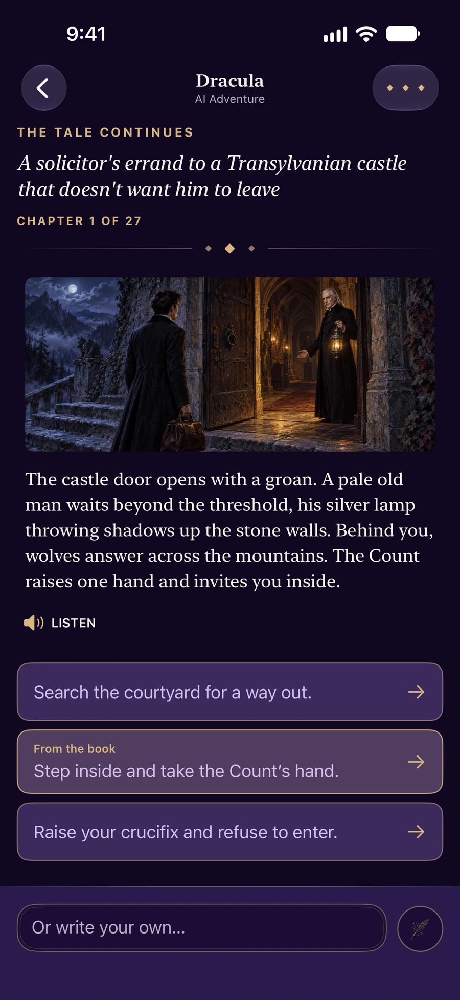
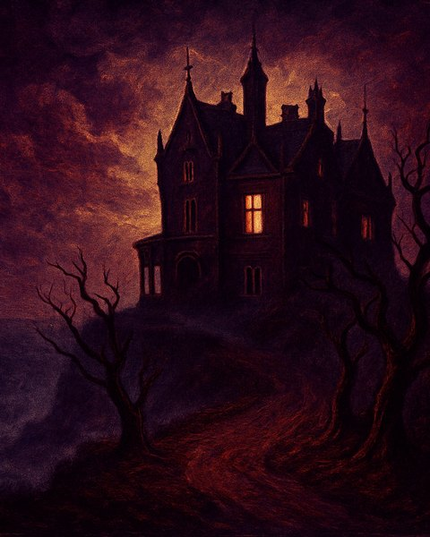
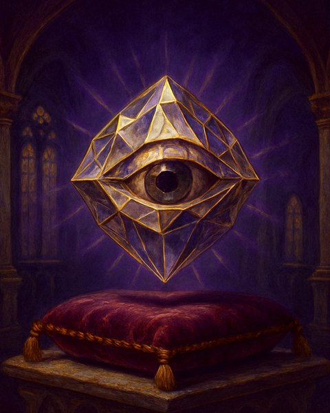
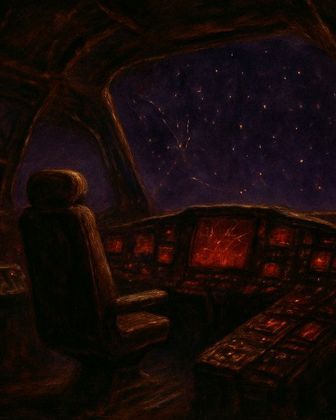
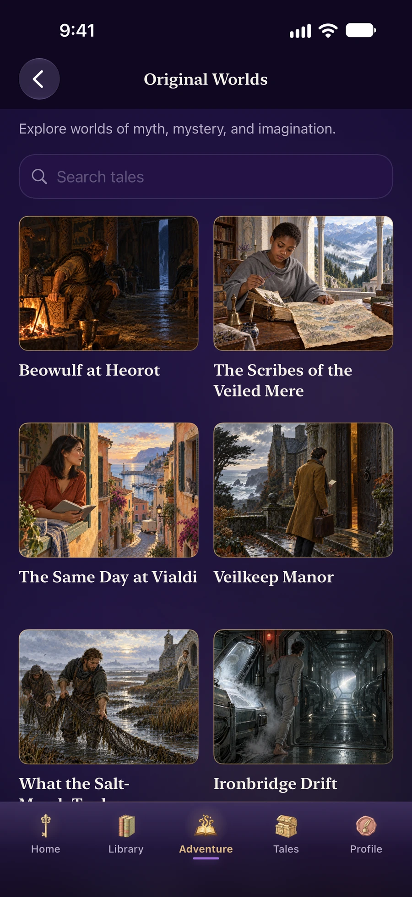
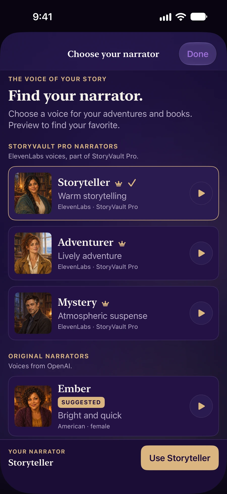
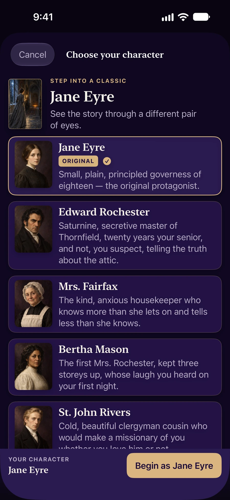

Branching tales,
written with you.
Step into Beowulf, Dracula, or a world only you and the AI know. Pick a branch or type your own move. Every choice rewrites the next page.




Your literary home01 / 06
Your choice writes
the next page.
Pick a world
A classic, a scenario, or your own idea.
Read the scene
The AI sets the next moment in motion.
Make your move
Choose a branch or write your own.
A real adventure, captured in StoryVault.
The door opens.
What do you do?
At Dracula’s castle, a pale figure waits with a silver lamp. Do you enter, escape, or stand your ground?
Example choices in the app
- Search the courtyard for a way out.
- Step inside and take the Count’s hand.
- Raise your crucifix and refuse to enter.
Pick a world. Any world.
Six of the worlds waiting inside. Each opens under its own painted cover and branches, turn by turn, from the premise on its card.



Plus 84 classics with scenarios in the source's own voice, and whole shelves of myth, folklore, history, stage & screen, and epic poetry — 250+ scenarios in all.
Every classic. Every choice.
An AI storyteller that plays along, and a quiet reader for the books themselves.
Live a classic
Eighty-four public-domain books come with the app, Pride & Prejudice and Treasure Island among them. Each has an AI Adventure that drops you into its world.
Or a world only you know
Sketch a premise with a title, a genre, characters, and a plot seed. The AI grows a branching tale from it and keeps the story straight, turn after turn.
Painted, not printed
Every book has a painted cover, part Victorian engraving and part illuminated manuscript. Each story you start gets one of its own. With Pro, AI Adventure paints the scene as you play, up to 10 turns a day and 100 a month.
A reader, too
Saved books open in a clean reader. Set the text size, pick serif or sans, go sepia or dark, and have the chapter read aloud. It remembers where you left off.
Earn the trophies
Achievements mark the books and scenarios you finish, the moves you write yourself, and how widely you read. Stats keep count of your library, finished reads, and turns played.
Yours alone
Your saved adventures and reading progress live on your device. No account is needed to read or play. AI sharing is optional, and ElevenLabs narration needs a separate permission. See our privacy policy.
Crafted, top to bottom.
Real screens from StoryVault. A library to return to, and worlds to get lost in.


Read it. Write it. Live it.
Warm parchment by day, deep violet after dark. Shape a new story, choose a character, and find a voice for the journey.



Eighty-four classics, free forever
Public domain, readable offline, and yours to keep.
Free to read. Pro to keep playing.
All 84 classics are free, with 10 AI Adventure turns to start. Pro carries on from there.
Monthly
- 3,000 AI Adventure turns a month
- Unlimited custom premises
- Unlimited saved adventures
- Original cloud narrators, around 80 minutes a day; optional ElevenLabs narrators have a separate, smaller allowance
- AI-painted scene art, up to 10 turns a day, 100 a month
- All four illustration styles: Painterly Classic, Ink & Watercolor, Cinematic Noir, Modern Illustrated
Annual
- Everything in Monthly
- 7-day free trial
- Renews yearly, cancel anytime
FAQ
Everything readers and parents ask us.
Is the AI just rewriting the original book?
No. The AI borrows the book's world and voice, but your adventure goes its own way. You're not reading Dracula. You're at Castle Dracula, making choices Jonathan Harker never had.
What if the AI says something off?
It happens. Choose Undo last turn from the menu at the top right to take the turn back and pick again, or type a different move to steer the story. It's tuned to stay in period and on tone, but it can still miss.
Does the AI train on my stories?
Nothing is sent to an AI provider until you allow AI sharing in the app. Story generation goes through our backend to Anthropic or OpenAI; OpenAI also provides scene art and the original cloud narrators. Optional ElevenLabs narrators require StoryVault Pro and separate permission before the passage and selected voice are sent to ElevenLabs. Anthropic and OpenAI exclude ordinary API content from model training by default, subject to the exceptions described in our privacy policy. ElevenLabs' applicable terms may allow it to use submitted content to improve its models. We never sell your input. The privacy policy explains each provider's data use and retention.
Can I read offline?
Yes. All 84 classics read fully offline. AI Adventure needs a connection, since every turn is written live.
What happens if I cancel Pro?
You keep access through the end of the current period. Your saved adventures and your library stay on your device, and all 84 classics remain free to read. The 10 free AI Adventure turns are a one-time welcome for new readers, so if you have already used them, new AI turns need an active subscription.
How is this different from AI Dungeon?
StoryVault starts with literature: hand-tuned scenarios, prose true to its period, and a real reader for the source books. The AI keeps you in the source's voice, so Dracula still sounds like Dracula.
Which devices does it run on?
StoryVault is for iPhone today, on iOS 17 or later.
I'm a teacher / parent / reviewer — how do I evaluate it?
StoryVault is rated 13+ on the App Store because of the community Tales feed. The bundled library is public-domain literature, and AI Adventure is instructed never to write explicit sexual content or anything that sexualizes minors. If a choice pushes that way, the story turns aside. Email support@hypersage.ai for review codes.
The page is open.
Free to try. Eighty-four classics already in the vault. The next one is yours to write.
Download on the App Store